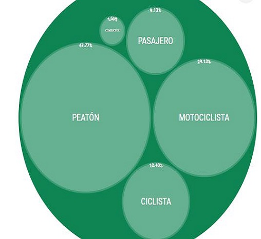

Registro 2020

En total, en el acumulado de esos cuatro años, la Secretaría de Movilidad reportó un total de 173.443 accidentes que afectaron a 374.079 actores viales (es decir, personas que se movilizaban a pie o en algún tipo de vehículo por las vías). De ese total de afectados, 2.695 murieron.
En total, en el acumulado de esos cuatro años, la Secretaría de Movilidad reportó un total de 173.443 accidentes que afectaron a 374.079 actores viales (es decir, personas que se movilizaban a pie o en algún tipo de vehículo por las vías). De ese total de afectados, 2.695 murieron.
Registro 2021

Y el 48 % de los fallecidos eran peatones. En segundo lugar aparecen los motociclistas, que corresponden al 28 % del total de decesos en las calles de la capital. Los que menos fallecen son los conductores, que apenas representaron el
2 %. De hecho, los datos muestran que de cada 20 conductores afectados en un accidente de tránsito, 19 salen totalmente ilesos.
Y el 48 % de los fallecidos eran peatones. En segundo lugar aparecen los motociclistas, que corresponden al 28 % del total de decesos en las calles de la capital. Los que menos fallecen son los conductores, que apenas representaron el 2 %. De hecho, los datos muestran que de cada 20 conductores afectados en un accidente de tránsito, 19 salen totalmente ilesos.